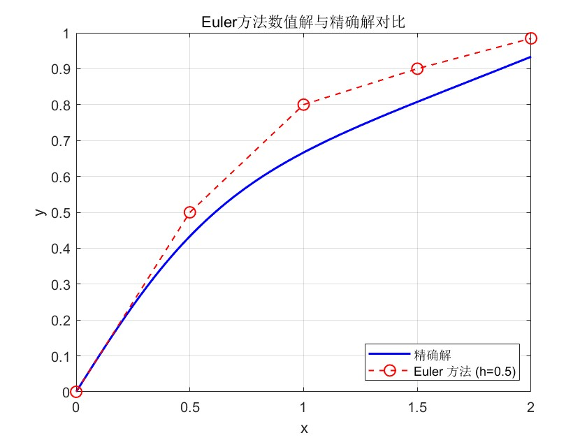
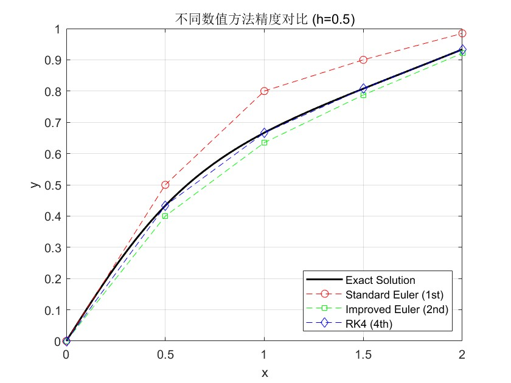
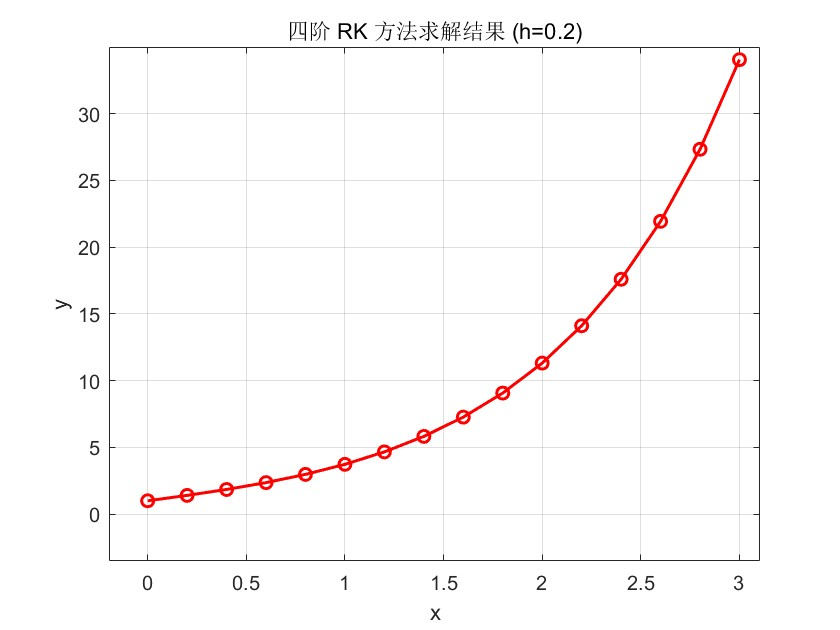

PDE数值解作业第二周
作业
1.用Euler方法求初值问题：
\[ \begin{cases} y'=1-\frac{2xy}{1+x^2},0\leq x\leq 2 \\ y(0)=0 \end{cases} \]
的数值解， \(h=0.5\) ，计算结果取5位小数，并与精确解 \(y(x)=\frac{x(3+x^2)}{3(1+x^2)}\) 比较

2.分别用改进Euler法与四阶RK方法求解同上初值问题，并与其结果比较

3.用Euler方法与改进Euler法计算积分
\[ I(x)=\int_0^xe^{t^2}dt \]
在 \(x=1\) 的近似值， \(h=0.1\) ,保留四位小数
等同问题
\[ \begin{cases} I'(x)=e^{x^2} \\ I(0)=0 \end{cases} \]

4.设有ODE初值问题
\[ \begin{cases} y'=f(x,y) \\ y(x_0)=y_0 \end{cases} \]
的二步公式
\[ y_{n+1}=y_n+\frac{h}{12}(5f_{n+!}+8f_n-f_{n-1}) \]
试求截断误差，几阶精度？
设有如下二步隐式公式（Adams-Moulton 公式）： \[y_{n+1} = y_n + \frac{h}{12}(5f_{n+1} + 8f_n - f_{n-1})\] 其中 \(f(x, y) = y'(x)\)。
局部截断误差定义 局部截断误差 \(T_{n+1}\) 定义为将精确解 \(y(x)\) 代入差分方程所产生的残差： \[T_{n+1} = y(x_{n+1}) - y(x_n) - \frac{h}{12}[5y'(x_{n+1}) + 8y'(x_n) - y'(x_{n-1})]\]
Taylor 展开推导 在 \(x_n\) 点处对各项进行 Taylor 展开：
左侧项展开 \[y(x_{n+1}) - y(x_n) = hy'_n + \frac{h^2}{2}y''_n + \frac{h^3}{6}y'''_n + \frac{h^4}{24}y^{(4)}_n + \frac{h^5}{120}y^{(5)}_n + O(h^6)\]
导数项展开 1. \(5y'(x_{n+1})\): \(5[y'_n + hy''_n + \frac{h^2}{2}y'''_n + \frac{h^3}{6}y^{(4)}_n + \frac{h^4}{24}y^{(5)}_n + O(h^5)]\) 2. \(8y'(x_n)\): \(8y'_n\) 3. \(-y'(x_{n-1})\): \(-[y'_n - hy''_n + \frac{h^2}{2}y'''_n - \frac{h^3}{6}y^{(4)}_n + \frac{h^4}{24}y^{(5)}_n + O(h^5)]\)
合并系数 将上述展开式代入 \(T_{n+1}\) 中，按 \(h\) 的幂次合并：
| 阶数 | 精确解展开系数 | 差分公式对应系数 | 差值 (误差系数) |
|---|---|---|---|
| \(h^1\) | \(y'_n\) | \(\frac{1}{12}(5+8-1)y'_n = y'_n\) | \(0\) |
| \(h^2\) | \(\frac{1}{2}y''_n\) | \(\frac{1}{12}(5+1)hy''_n = \frac{1}{2}y''_n\) | \(0\) |
| \(h^3\) | \(\frac{1}{6}y'''_n\) | \(\frac{1}{12}(\frac{5}{2}-\frac{1}{2})h^2 y'''_n = \frac{1}{6}y'''_n\) | \(0\) |
| \(h^4\) | \(\frac{1}{24}y^{(4)}_n\) | \(\frac{1}{12}(\frac{5}{6}+\frac{1}{6})h^3 y^{(4)}_n = \frac{1}{12}y^{(4)}_n\) | \(-\frac{1}{24}y^{(4)}_n\) |
- 局部截断误差 (Local Truncation Error): \[T_{n+1} = -\frac{1}{24}h^4 y^{(4)}(\xi) = O(h^4)\]
- 精度阶数 (Order of Accuracy): 由于局部截断误差为 \(O(h^{p+1})\) 时，该方法为 \(p\) 阶方法。 本公式的局部截断误差为 \(O(h^4)\)，因此其精度阶数为 3 阶。
5.试用Taylor展开构造形如
\[ y_{n+1}=y_{n-3}+h(\alpha f_n+\beta f_{n-1}) \]
的四步公式，使其具有尽可能高的阶，并写出局部截断误差
构造局部截断误差表达式 根据题目要求的公式形式： \[y_{n+1} = y_{n-3} + h(\alpha f_n + \beta f_{n-1})\] 其局部截断误差 \(T_{n+1}\) 定义为： \[T_{n+1} = y(x_{n+1}) - y(x_{n-3}) - h[\alpha y'(x_n) + \beta y'(x_{n-1})]\]
Taylor 展开 (在 \(x_n\) 处展开) 为了确定参数 \(\alpha\) 和 \(\beta\)，我们将各项在 \(x_n\) 处展开至 \(h^3\) 项：
- \(y(x_{n+1})\): \[y_n + hy'_n + \frac{h^2}{2}y''_n + \frac{h^3}{6}y'''_n + O(h^4)\]
- \(y(x_{n-3})\): \[y_n - 3hy'_n + \frac{9h^2}{2}y''_n - \frac{9h^3}{2}y'''_n + O(h^4)\]
- \(h\alpha y'(x_n)\): \[h\alpha y'_n\]
- \(h\beta y'(x_{n-1})\): \[h\beta [y'_n - hy''_n + \frac{h^2}{2}y'''_n + O(h^3)] = h\beta y'_n - h^2\beta y''_n + \frac{h^3\beta}{2}y'''_n + O(h^4)\]
待定系数方程组 将上述展开式代入 \(T_{n+1}\)，按 \(h\) 的幂次合并各项系数：
\[ \begin{aligned} T_{n+1} = & \ (y_n - y_n) \\ & + h(1 - (-3) - \alpha - \beta)y'_n \\ & + h^2(\frac{1}{2} - \frac{9}{2} + \beta)y''_n \\ & + h^3(\frac{1}{6} - (-\frac{9}{2}) - \frac{\beta}{2})y'''_n + O(h^4) \end{aligned} \]
为了使公式具有尽可能高的阶，令 \(h^1\) 和 \(h^2\) 的系数为 0： 1. \(h^1\) 项系数： \(4 - \alpha - \beta = 0\) 2. \(h^2\) 项系数： \(-4 + \beta = 0\)
解得： - \(\beta = 4\) - \(\alpha = 0\)
局部截断误差与阶数确定 将解得的参数代入 \(h^3\) 项系数： \[C_3 = \frac{1}{6} + \frac{9}{2} - \frac{4}{2} = \frac{1+27-12}{6} = \frac{16}{6} = \frac{8}{3}\]
因此： - 局部截断误差： \(T_{n+1} = \frac{8}{3}h^3 y'''(\xi) = O(h^3)\) - 精度阶数： 由于局部截断误差为 \(O(h^3)\)，该方法具有 2 阶精度。
最终公式 所构造的四步显式公式为： \[y_{n+1} = y_{n-3} + 4h f_{n-1}\]
6.写出用四阶RK方法求解问题
\[ \begin{cases} y'''+2y''-y'-2y=e^x,0\leq x \leq 3\\ y(0)=1,y'(0)=2,y''(0)=0 \end{cases} \] 的计算公式，取h=0.2
降阶处理（化为一阶方程组），首先将三阶方程化为一阶方程组。令向量 \(\mathbf{Y} = [y_1, y_2, y_3]^T\)，定义如下变量： - \(y_1 = y\) - \(y_2 = y'\) - \(y_3 = y''\)
由原方程可得： \[y_3' = y''' = e^x - 2y'' + y' + 2y\]
构造一阶向量微分方程： \[\frac{d\mathbf{Y}}{dx} = \mathbf{F}(x, \mathbf{Y}) = \begin{bmatrix} y_2 \\ y_3 \\ e^x - 2y_3 + y_2 + 2y_1 \end{bmatrix}\]
初值条件为： \[\mathbf{Y}_0 = \begin{bmatrix} 1 \\ 2 \\ 0 \end{bmatrix}\]
RK4 迭代公式 对于步长 \(h=0.2\)，从 \(x_n\) 推进到 \(x_{n+1}\) 的公式为： \[\mathbf{Y}_{n+1} = \mathbf{Y}_n + \frac{h}{6}(\mathbf{K}_1 + 2\mathbf{K}_2 + 2\mathbf{K}_3 + \mathbf{K}_4)\]
其中： - \(\mathbf{K}_1 = \mathbf{F}(x_n, \mathbf{Y}_n)\) - \(\mathbf{K}_2 = \mathbf{F}(x_n + \frac{h}{2}, \mathbf{Y}_n + \frac{h}{2}\mathbf{K}_1)\) - \(\mathbf{K}_3 = \mathbf{F}(x_n + \frac{h}{2}, \mathbf{Y}_n + \frac{h}{2}\mathbf{K}_2)\) - \(\mathbf{K}_4 = \mathbf{F}(x_n + h, \mathbf{Y}_n + h\mathbf{K}_3)\)
